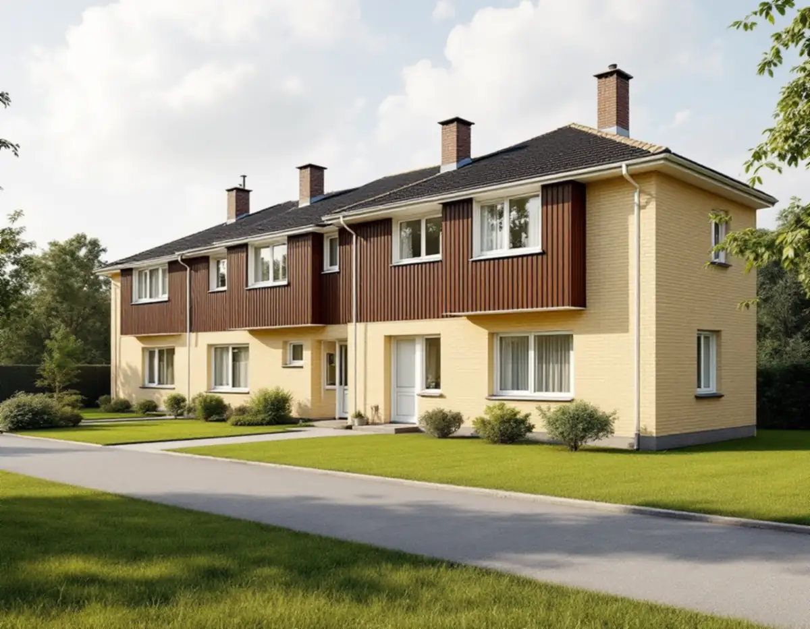
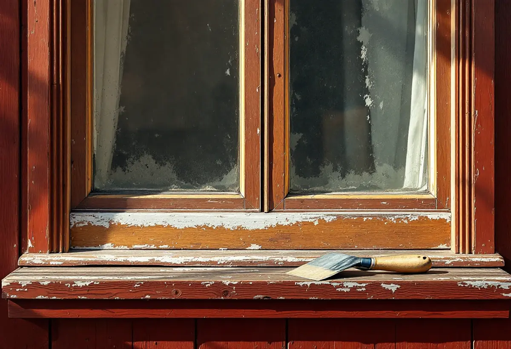
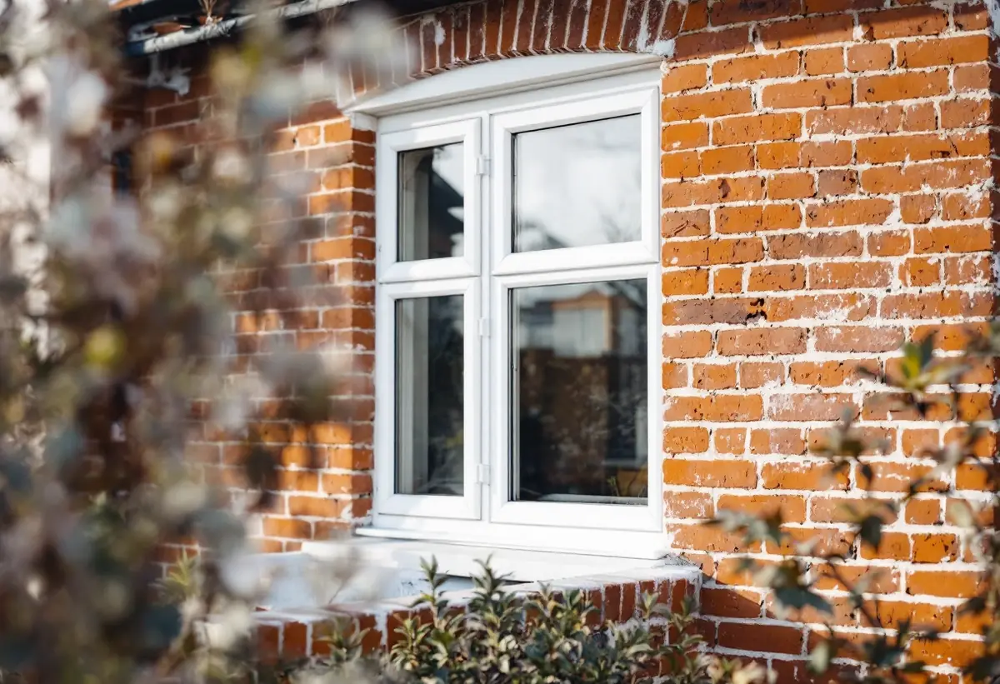

Besiktning
Varje fönster bedöms för sig och resultatet sammanställs.
Radhusen i Sätra, Bredäng och Vårberg byggdes rationellt och i stora grupper där husen ser likadana ut. Därför märks det när ett hus får fönster som avviker. Geal Entreprenad AB renoverar fönster på radhus och villor i Skärholmen och behåller fönstrens mått och utseende.

Stadens strategi för småhusområden, Varsam, beskriver hur industrialiseringen av byggtekniken fick sitt genombrott i början av 1960-talet, och hur Bredäng blev den första stadsdelen som planerades i stor skala med byggstart 1962, följd av Sätra. En stor del av miljonprogrammets bebyggelse var gruppbyggda småhus och radhus.
Varsam skriver att det rationella och industriella byggandet avspeglades i arkitekturen genom strikt gruppering av byggnader och en enkel och stram gestaltning. Omsorgen om planlösningarna var stor, och goda ljusförhållanden och funktionalitet var ledord.

Stadens områdesfakta för 2025 visar att det inte finns några småhus i bostadsrätt i Skärholmens stadsdelsområde. 1 976 småhus ägs med äganderätt, fördelade på Vårberg, Skärholmen, Sätra och Bredäng.
Det betyder att det är du som beslutar om fönstren och som kan få rotavdrag för arbetet. Men eftersom husen i en grupp byggdes likadana lönar det sig att prata med grannarna, både om kulör och om att renovera flera hus samtidigt.
I tabellen i Varsam är Bredäng markerat som kulturhistoriskt värdefull miljö, medan Sätra, Skärholmen och Vårberg saknar den markeringen. Stockholms stad skriver att ändringar av fönster, som ny kulör, andra profiler eller ändrad indelning, kan kräva bygglov beroende på byggnaden, och hänvisar till Stadsmuseets klassificeringskarta.
En renovering som behåller fönstrets kulör, mått och indelning ändrar inte husets utseende. Ska något ändras kontrollerar vi kartan för din fastighet först.
Riksantikvarieämbetet skriver att det utan besiktning är alltför lätt att döma ut fönster som mycket väl skulle gå att bevara, och råder att arbetet inleds med en systematisk besiktning och analys av varje fönster för sig. Det ger också underlag för en mer exakt kostnadsberäkning.
I modernare hus är det enligt myndigheten framför allt fönstrens synliga mått och proportioner som är viktiga att bevara. På ett radhus från 1960-talet betyder det att karmen och bågarnas bredd ska vara desamma efter renoveringen, så att fönstret fortsätter att se ut som grannarnas.
Riksantikvarieämbetet skriver att färgskiktet på ett fönster ska skydda karm och båge mot väta utifrån utan att hindra fukt i virket från att torka ut, ha god beständighet och vara lätt att förnya. Linoljefärg tränger in i virket och fäster bra, medan latexfärger enligt myndigheten snarare lägger sig som en film på ytan och har en tendens att klibba ihop, vilket är en nackdel på fönster.
Lika viktigt är kittet. Myndigheten påpekar att fönsterkittet ska vara helt, så att fukt inte tränger in i träet och orsakar röta, och att sol och väta bryter ner färg och kitt på fönstrens mest utsatta delar. Vi tar därför bort löst kitt och kittar om där det behövs innan bågen målas.
Fönstrets underhåll består enligt Riksantikvarieämbetet i första hand av ommålning och kittning. Skadade delar lagas, bågarna justeras och innerbågen tätas med en list som passar falsen. Fönstret ska målas och justeras innan listerna sätts upp.
Om fasader och kulörer i stadsdelen kan du läsa under fasadmålning i Skärholmen.

Varje fönster bedöms för sig och resultatet sammanställs.
Stadsmuseets karta kontrolleras, särskilt i Bredäng.
Per fönster, och per hus om grannarna är med.
Skrapning, lagning, kittning och målning i samma kulör.
Bågarna justeras och innerbågen tätas.
Vi går igenom fönstren med dig.
Reparation och målning av fönster på ett småhus som du äger och bor i räknas som rotarbete hos Skatteverket. Avdraget gäller arbetskostnaden.
Avdraget är högst 30 procent av arbetskostnaden, högst 50 000 kronor per person och år och högst 75 000 kronor tillsammans med rutavdrag. Material och resor ger inget avdrag. Geal drar avdraget direkt på fakturan.
Antal fönster, skador på trä och kitt, beslag, tätning och om flera hus i gruppen renoveras samtidigt. Efter ett gratis platsbesök får du ett skriftligt kostnadsförslag.
Byta eller renovera fönster.
Fönsterbyte i Stockholm →Takbyte, takbesiktning och plåtarbeten.
Takläggare i Skärholmen →Radhus i grupper i Bredäng, Sätra och Vårberg.
Takrenovering i Skärholmen →Radhustomterna och grannarna.
Attefallshus i Skärholmen →Radhusen, källarplanet och golvbrunnen.
Badrumsrenovering i Skärholmen →Hela ombyggnaden av radhuset.
Byggföretag i Skärholmen →Radhusen från 60- och 70-tal.
Fasadmålning i Skärholmen →Fasader på radhus och kedjehus.
Fasadrenovering i Skärholmen →Radhus i sammanhållna husgrupper.
Fönsterbyte i Skärholmen →Nya golv i radhus och lägenheter.
Golvläggare i Skärholmen →Parkett och lamellgolv från 1960-talet.
Golvslipning i Skärholmen →1960-talskök, bostadsrätt och radhus.
Köksrenovering i Skärholmen →Lägenheter, trapphus och radhus.
Målare i Skärholmen →Rännor och stuprör i sluttningarna.
Plåtslagare i Skärholmen →Altan, plank och förråd vid radhuset.
Snickare i Skärholmen →Egna radhus i Sätra, Bredäng och Vårberg.
Takbyte i Skärholmen →Ny tapet i hyresrätt och bostadsrätt.
Tapetsering i Skärholmen →Radhusen, uterum och skärmtak.
Tillbyggnad i Skärholmen →Renovera hela huset eller lägenheten.
Totalrenovering i Skärholmen →